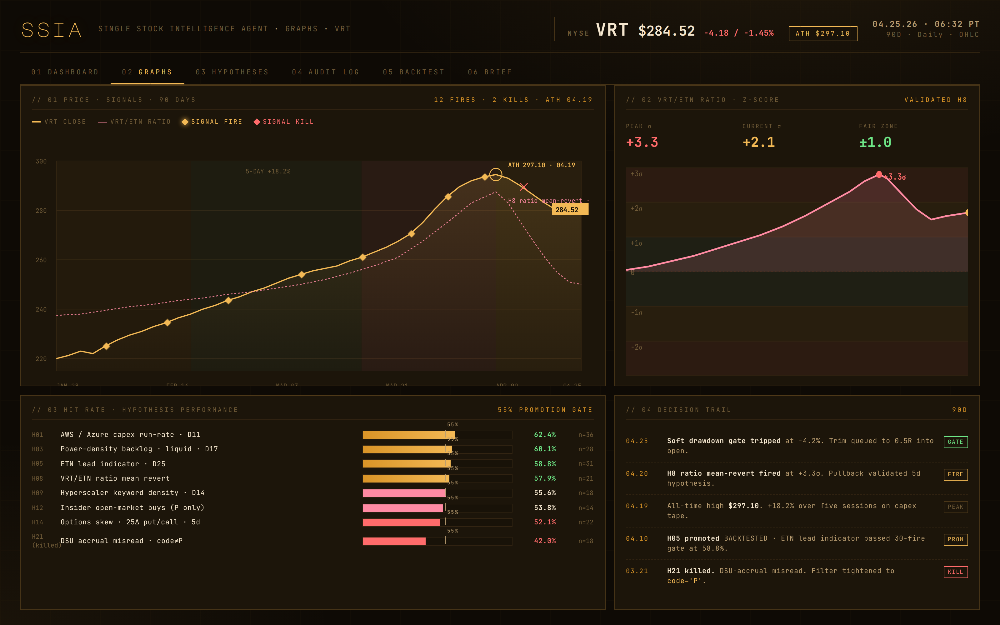
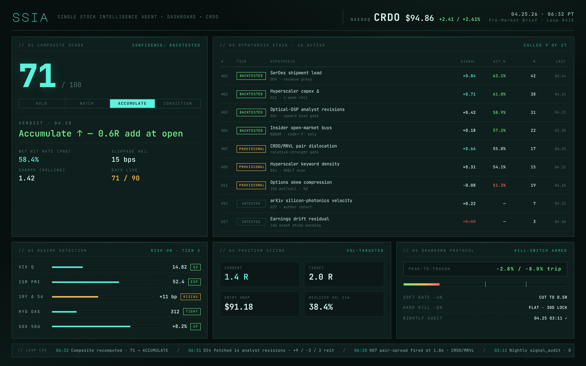
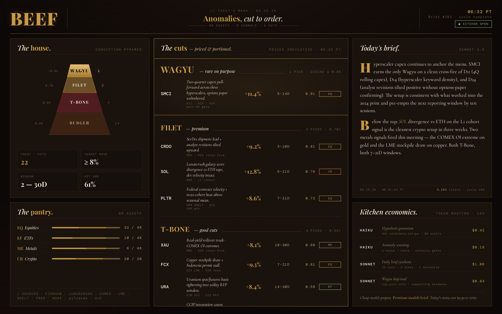

// 01
Single Stock Intelligence Agent
·
Equities
Whatever the math will defend in writing.




Five production agents on the Anthropic Claude API. Sole author of every system prompt, persona file, and SKILL.md across the suite. Stock intelligence on a hypothesis stack with a kill-switch. Satellite prospecting trained on the famous, pointed at the forgotten. Closed-loop marketing that reports back.




